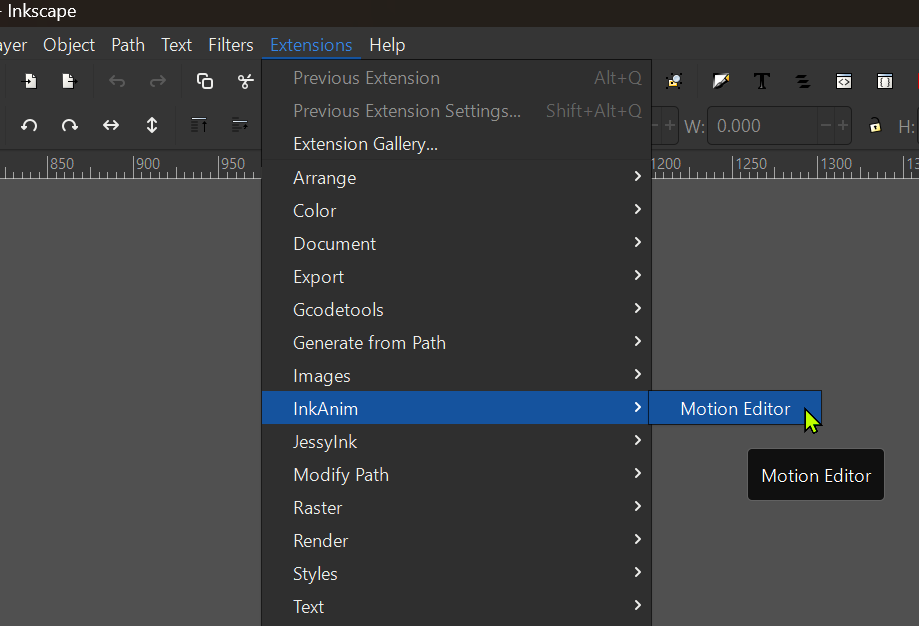
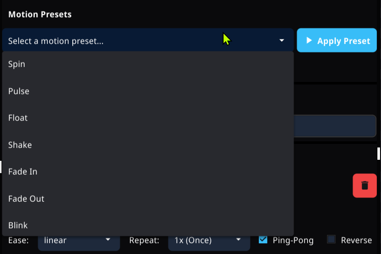
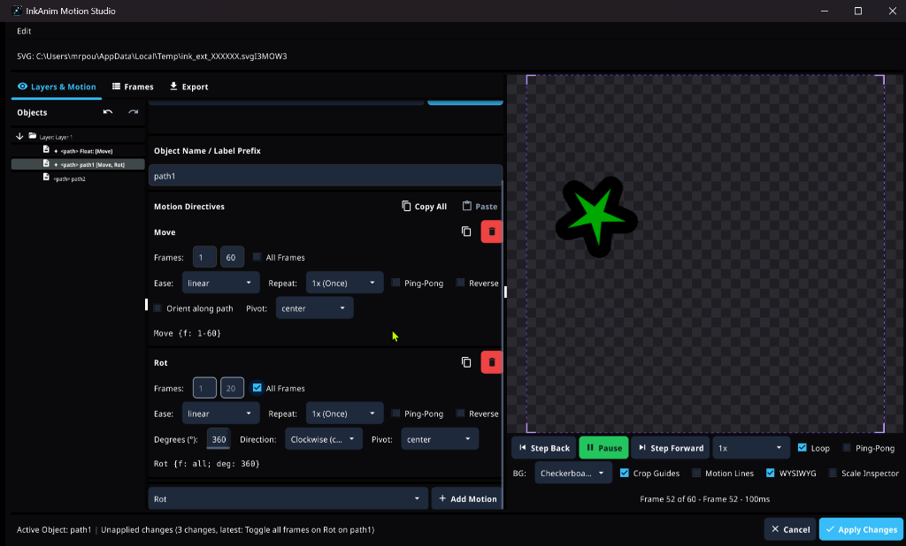

Built for Emote Animators in Inkscape
Native Inkscape Extension
Launch the studio directly from your canvas via Extensions → InkAnim → Motion Editor. Selected objects are automatically highlighted and ready to animate.
Full-Height Tabbed Studio
Three dedicated full-height workspaces: Layers & Motion for inspecting objects and directives, Frames for timing and crop boundaries, and Export for GIF generation.
Undo & Redo History
Full bidirectional undo/redo support with standard keyboard shortcuts (Ctrl+Z / Ctrl+Y) and dedicated toolbar buttons to safely experiment without fear of losing work.
Copy & Paste Directives
Copy individual motion cards or all directives from one element and paste onto another with one click. Intelligently duplicates referenced pivot objects so animations remain decoupled.
Element & Anchor Deletion
Delete vector paths, shapes, or motion anchors directly from the inspector or with the Delete key. Byte-splicing preserves untouched SVG markup and comments.
Visual Parameter Inspector
No manual syntax typing required. Tweak frame ranges, easing curves, repeats, ping-pong, rotation angles, pivot anchors, scale, fade, and color shifts with dedicated UI widgets.
Motion Preset Library
Apply one-click motion animations including Spin 360°, Gentle Bob, Pulse/Throb, Pop-In, Slide In/Out, Fade In/Out, Camera Push/Pull, and Color Cycling.
Clamp-and-Hold Poses
Objects automatically maintain their final evaluated transform state after a motion sequence concludes instead of snapping back to their base document pose.
Unapplied Changes Safety Guard
Context-aware confirmation dialog prevents accidental loss of motion directives if you close or cancel after exporting an animated GIF.
See the Extension in Action
Experience a streamlined vector animation workflow designed directly within Inkscape.

Launch from Inkscape Menu
Access the editor directly via Extensions → InkAnim → Motion Editor. Selected canvas elements are automatically identified and focused.
Interactive Layers & Motion
Browse layers, paths, and groups with active motion badges ([Move], [Scale]). Easily inspect directives and target shapes with zero guesswork.

Visual Presets & Parameters
Select from built-in presets including Spin, Pulse, Float, Shake, Fade, and Blink, and dial in easing curves, ping-pong, and repeats with UI widgets.

Stack & Re-Use Directives
Combine multiple movements like translation, rotation, and scaling on single elements. Use the Copy & Paste toolbar to transfer motion curves across objects with one click.
How to Install the Extension
Follow these quick steps to add the Motion Editor to your Inkscape installation on Windows, macOS, or Linux:
-
Download the Extension Package for Your OS
Grab the archive matching your platform from GitHub Releases:
🪟 Windows (x64)InkAnim_v0.5.0-beta2_inkscape-extension_windows_amd64.zip🍎 macOS (Apple Silicon & Intel Universal)InkAnim_v0.5.0-beta2_inkscape-extension_darwin_all.zip🐧 Linux (x86_64)InkAnim_v0.5.0-beta2_inkscape-extension_linux_amd64.tar.xz -
Extract into Your Inkscape Extensions Directory
Quick shortcut in Inkscape: Open
Edit → Preferences → System(orInkscape → Settings → Systemon macOS) and click the Open button next to User extensions.Extract the archive into an
inkanim/subfolder inside your user extensions directory:🪟 Windows:%APPDATA%\inkscape\extensions\inkanim\🍎 macOS:~/Library/Application Support/org.inkscape.Inkscape/config/inkscape/extensions/inkanim/🐧 Linux:~/.config/inkscape/extensions/inkanim/📂 Expected Directory Layout After Extraction:
📁 extensions/└── 📁 inkanim/├── 📄 motion_editor.inx <!-- Inkscape menu descriptor -->├── 🖼️ icon.png <!-- Extension studio icon -->└── 📁 bin/└── ⚙️ inkanim-ext.exe (Windows)or inkanim-ext (macOS & Linux)💡 On macOS and Linux, ensure the binary in
bin/has executable permission:chmod +x bin/inkanim-ext -
Launch in Inkscape
Restart Inkscape, open or draw your vector artwork, and launch via
Extensions → InkAnim → Motion Editor.